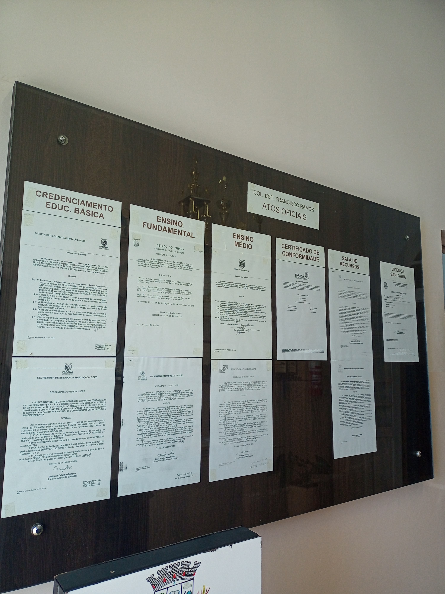
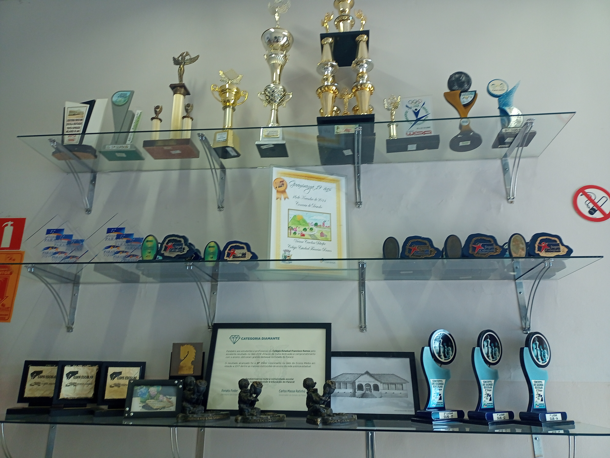
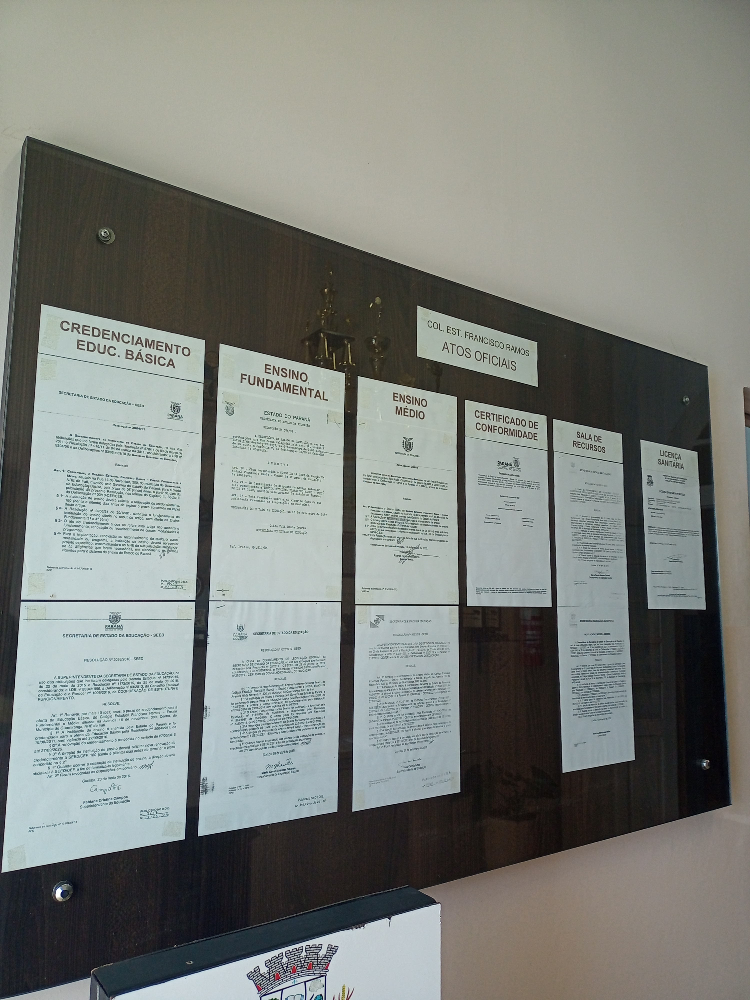
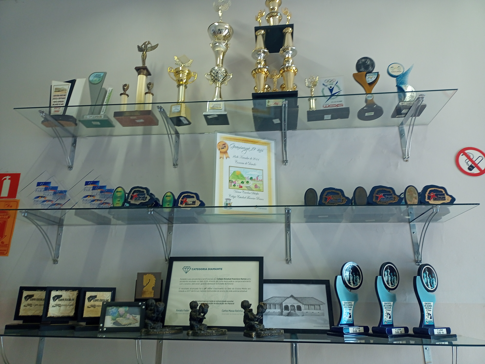

HISTÓRIA
O Colégio Estadual Francisco Ramos situado no município de Guamiranga na BR 373, foi inaugurado em 1951 atendendo do 1° ao 4° ano do ensino fundamental, com aproximadamente 41 alunos e 2 professoras.
Mais tarde vindo a ter acesso do 1° ao 5° ano do fundamental, esse modelo prosseguiu até o ano de 1978 onde o ensino do 5° ano ao 8° ano foi juntado a grade escolar.
Seguiu-se dessa forma até o ano de 1997, onde um ensino mais avançado foi implementado, neste momento os alunos tinham acesso ao ensino médio.
Algumas especulações sobre a fundação do colégio acreditam que o doador do terreno onde se encontra a instituição do Francisco Ramos foi feita por um morador local, porém nada é comprovado por escrituras, não haviam comentários nem informações suficientes na época.
Em 2023 o colégio completa seus 82 anos, 82 anos de muito trabalho e esforço por todos. Dedicação e carinho de cada funcionário que aqui se fez presente e honrou o nome da nossa escola. Nossa escola nesses 82 anos não formou apenas empregos, mas também famílias, não de sangue mas de coração, deixando muitas histórias por esses longos anos.
INFRAESTRUTURA
-
•Alimentação escolar para os alunos.
•Água filtrada.
•Água da rede pública.
•Energia da rede pública.
•Fossa.
•Lixo destinado à coleta periódica.
•Acesso à Internet.
•Banda larga.
•Instalação de ensino.
•11 salas de aulas.
•Sala de diretoria.
•Sala de professores.
•Laboratório de informática.
•Laboratório de ciências.
•Sala de recursos multifuncionais para Atendimento Educacional Especializado (AEE).
•Quadra de esportes coberta.
•Quadra de esportes descoberta.
•Cozinha.
•Biblioteca.
•Banheiro adequado à alunos com deficiência ou mobilidade reduzida.
•Sala de secretaria.
•Despensa.
•Pátio coberto.
•Pátio descoberto.
•Área verde.
EQUIPAMENTOS:
•TV.
•Computadores.
•DVD.
•Antena parabólica.
•Impressora.
•Aparelho de som.
•Projetor multimídia (datashow).
 


